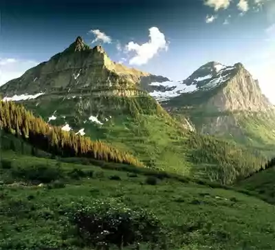

SRBIJA
Nacionalni park „Kopaonik“ prostire se na najvišim i najočuvanijim delovima planine Kopaonik, koja se uzdiže u središnjem delu južne Srbije. Zaštićen
je 1981. na površini od 11.809 ha, oko koje je zaštitna zona površine od 19.985 ha.
Iako počinje na visini od oko 800 m, najveća površina Parka obuhvata centralni i najšumovitiji deo kopaoničkog masiva, prostrani, relativno zaravnjeni
predeo visok oko 1700 m, poznat kao Ravni Kopaonik. U planinskom reljefu dominira najviši, Pančićev vrh sa 2017 m nadmorske visine.

Kopaonik odlikuje visoki stepen biološkog i predeonog diverziteta. Na ovom masivu pronađeno je preko 1600 vrsta biljaka. Samo visokoplaninsku floru
gradi 825 vrsta, od kojih je 91 vrsta endemičnog, a 82 vrste subendemičnog karaktera. Tu se ističu tri lokalna kopaonička endemita: kopaonička
čuvarkuća, kopaonička ljubičica, i Pančićeva režuha. Na Evropskoj crvenoj listi četiri, na Crvenoj listi flore Srbije nalazi se 50 vrsta, a na spisku
prirodnih retkosti Srbije 30 vrsta biljaka ovog masiva. U odnosu na endemsku visokoplaninsku floru Balkanskog poluostrva, 11,9% endema raste na
Kopaoniku, što ga čini jednim od najznačajnijih centara endemizma u Srbiji i na Balkanu.
Na Kopaoniku su prisutni svi vegetacijski pojasevi visokih planina centralnog dela Balkana, koji odražavaju vegetacijsko bogatstvo ovog područja.
Kopaonik odlikuju velike površine sa izuzetno vrednim i očuvanim ekosistemima. Ekološka raznovrsnost uslovila je i bogatstvo životinjskog sveta.
Bogata fauna insekata (jedini poznati lokalitet na kome je nađena endemična i reliktna vrsta dnevnog leptira, veći broj vodozemaca i gmizavaca,
prisutno 170 vrsta ptica od kojih je 90% gnezdarica, i 39 vrsta sisara, čine izuzetno prirodno bogatstvo ovog Nacionalnog parka.